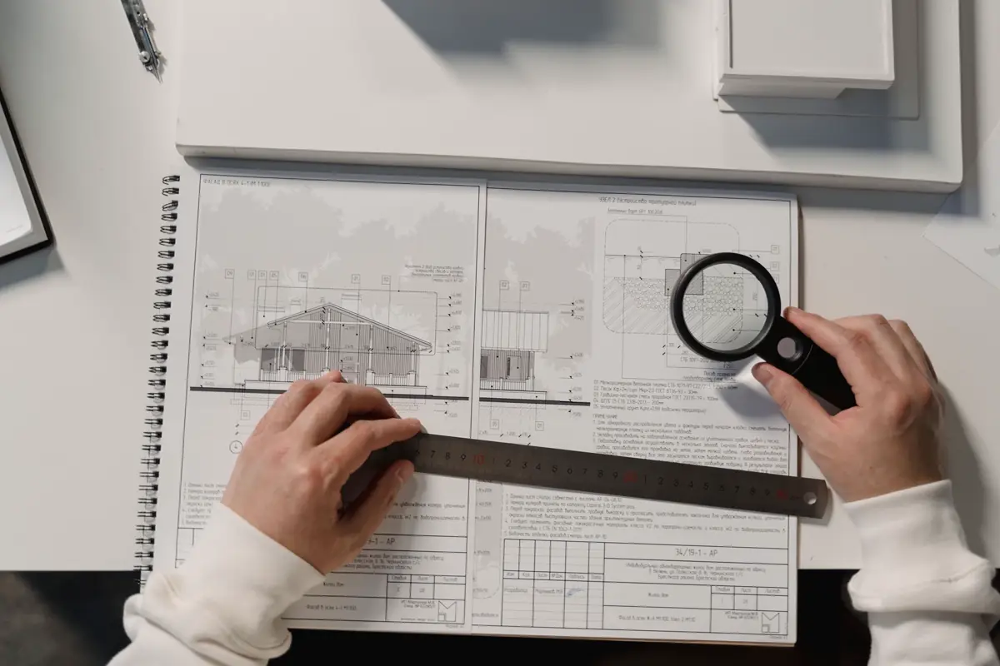
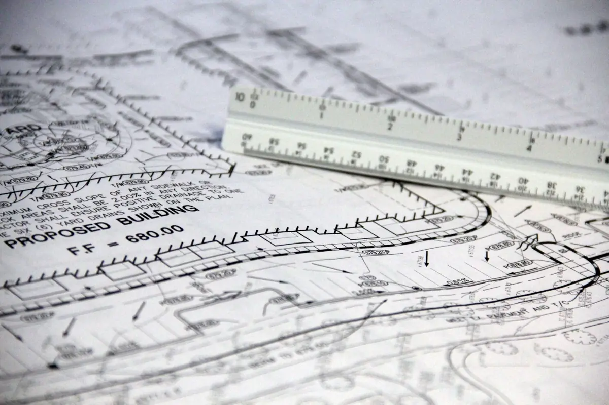

O que é a ART de acessibilidade
A ART — Anotação de Responsabilidade Técnica é o registro, no CREA, de que um profissional habilitado assumiu a responsabilidade por um serviço de engenharia. Não existe uma "ART de acessibilidade" como documento à parte: existe a ART do laudo, do projeto ou da execução de uma adequação de acessibilidade, com a atividade descrita no registro.
É ela que dá validade ao laudo. Sem ART (ou RRT, quando o responsável é arquiteto), a prefeitura devolve o processo e o documento não serve como prova. Esta página explica a responsabilidade técnica; o conteúdo da vistoria está em laudo de acessibilidade NBR 9050.
O que a ART cobre em cada etapa
| Etapa | Quem responde | Para que serve |
|---|---|---|
| Laudo de vistoria | Profissional que vistoriou e assinou o laudo | Alvará, Ministério Público, auditoria, compra e locação de imóvel |
| Plano de adequação | Profissional que definiu as soluções | Cronograma de obra, TAC, aprovação em assembleia |
| Projeto de adequação | Autor do projeto | Aprovação de reforma na prefeitura e contratação da obra |
| Execução da obra | Responsável técnico da empresa que executa | Garantia de que o executado segue o projeto |
| Vistoria de conferência | Profissional que conferiu a obra pronta | Laudo de cumprimento, encerramento de exigência |
Na Axial, o trabalho é o laudo, o plano de adequação e a vistoria de conferência depois da obra. A execução pode ficar com a empreiteira de confiança do cliente, que registra a ART de execução dela — e conferimos o resultado contra o mesmo escopo.

ART ou RRT: qual vale para acessibilidade
As duas valem. A ART é registrada no CREA por engenheiro; o RRT é registrado no CAU por arquiteto e urbanista. O órgão que exige o documento quer um responsável habilitado com o registro correspondente, não um conselho específico. O que importa é a atividade registrada bater com o documento entregue: ART de "projeto" não cobre laudo de vistoria, e vice-versa.
Como conferir a ART do seu laudo
Número no laudo
O número da ART precisa estar no próprio laudo, junto do nome e do registro do responsável técnico.
Consulta no CREA-ES
A ART pode ser consultada no serviço público de consulta do CREA-ES pelo número. Confira se está registrada e quitada.
Endereço e atividade
O endereço da obra e a atividade descrita na ART precisam ser os do seu imóvel e do serviço entregue.
Contratante
O contratante na ART é quem responde perante o órgão: empresa, condomínio ou proprietário, conforme o caso.
Quando a ART de acessibilidade é pedida
Alvará e licenciamento
No pedido ou na renovação do alvará de funcionamento, a acessibilidade é comprovada por documento técnico com responsável — veja o laudo de acessibilidade para alvará.
Ministério Público e TAC
Na resposta a ofício e no cumprimento de TAC, a ART é o que torna o laudo prova técnica — ver notificação do Ministério Público.
Condomínio, contrato e auditoria
Em condomínio, a ART protege o síndico na contratação da obra. Em contratos com órgão público, editais e auditorias de rede, ela costuma vir listada entre os documentos obrigatórios, assim como nos demais laudos técnicos e ART.

Sinais de laudo de acessibilidade sem valor técnico
- sem número de ART ou RRT, ou com ART de atividade diferente do serviço entregue;
- checklist marcado "sim/não" sem nenhuma medida registrada;
- sem fotos ou com fotos que não identificam o local;
- sem conclusão — descreve o imóvel, mas não diz se atende;
- sem plano de adequação quando há não conformidade;
- assinado por quem não esteve no imóvel.
Desníveis resolvidos com rampa ou passarela metálica e corrimãos e guarda-corpos de aço envolvem cálculo e fixação — ver estruturas metálicas.
Perguntas frequentes sobre ART de acessibilidade
Laudo de acessibilidade precisa de ART?
Precisa. É serviço técnico de engenharia ou arquitetura e exige responsável habilitado com ART registrada no CREA ou RRT registrado no CAU. Sem esse registro, prefeitura e Ministério Público não aceitam o documento.
Qual a diferença entre ART e RRT na acessibilidade?
A ART é registrada no CREA por engenheiro e o RRT é registrado no CAU por arquiteto e urbanista. Os dois têm o mesmo papel: vincular um profissional habilitado ao serviço. O que importa é a atividade registrada corresponder ao documento entregue, como laudo, projeto ou execução.
Como consultar a ART de um laudo de acessibilidade?
Pelo número da ART, que deve constar no laudo, no serviço de consulta pública do CREA-ES. Confira se ela está registrada, se o endereço é o do imóvel e se a atividade descrita é a do serviço entregue.
A ART do laudo cobre a obra de adequação?
Não. A ART do laudo cobre a vistoria e o diagnóstico. A obra de adequação tem a ART de execução do responsável técnico de quem executa, e o projeto, quando existe, tem a ART do autor. Ao final, uma vistoria de conferência com ART própria comprova que a adequação ficou conforme.
Quanto tempo depois da vistoria sai o laudo com ART?
Em geral entre cinco e dez dias úteis para loja, clínica ou escritório de porte médio. Imóveis grandes, condomínios com várias torres e escolas levam mais, porque o número de rotas e de itens medidos é maior.
Laudo de acessibilidade com ART na Grande Vitória
ART registrada no CREA-ES para laudos de acessibilidade em todo o Espírito Santo metropolitano:
Precisa de laudo de acessibilidade com ART?
Informe o tipo de imóvel, a área e quem exigiu o documento. Retornamos com escopo, prazo e valor.
Continue lendo
- Quanto custa um laudo de acessibilidade
- Banheiro acessível: medidas da NBR 9050
- Laudo de acessibilidade NBR 9050 — o que é verificado item a item
- Laudo de acessibilidade para alvará de funcionamento
- Laudo de acessibilidade para condomínio
- Notificação do Ministério Público por acessibilidade
- Laudos técnicos e ART — todos os tipos de documento
- Projeto estrutural com ART